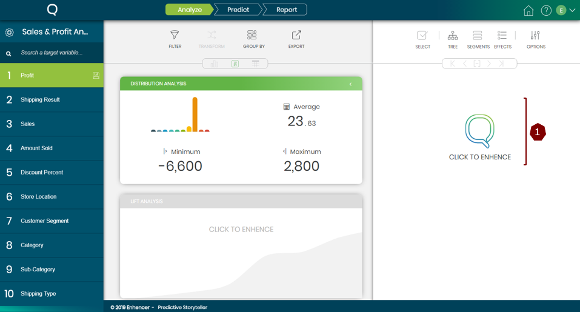

Enhence is where all the magic happens. It allows users to run machine learning algorithms with a click of a button and obtain powerful and actionable insights in matter of seconds.
On the right panel click the “Click To Enhence” button to start enhancing your data. Always remember the green highlighted variable on the left panel will be used as your target variable for the Enhence task meaning, all the models will be considering the selected variable as the target variable (aka: Dependent variable, Y).
In order to obtain models for the target variable user need to select other variables to see their relations and effects on the target variable (aka: Independent variable, Xi’s ).

Upon clicking the Enhence Button this screen will appear which allows user to select the desired variables for
the model.
Once the model is created these buttons can be used to obtain the results of the model.